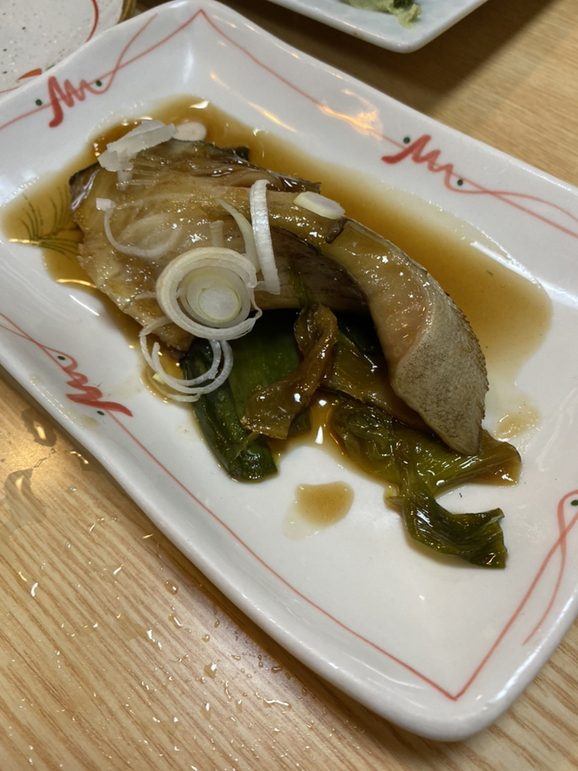
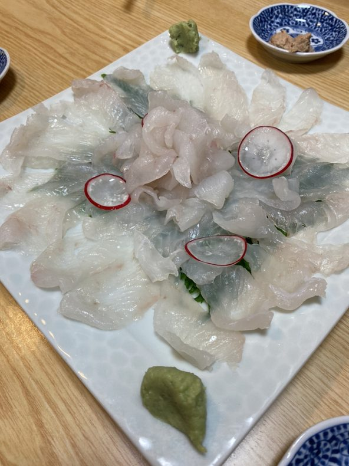
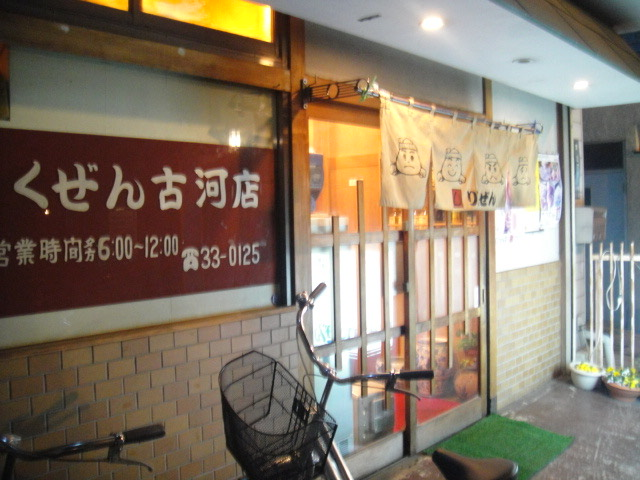
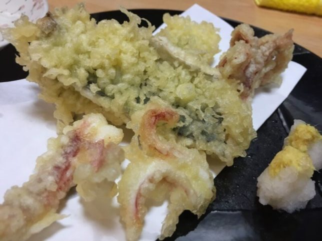
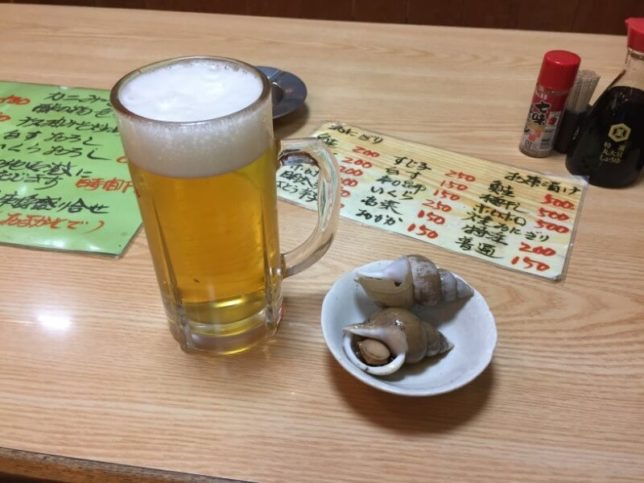
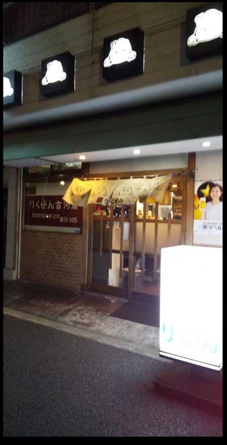
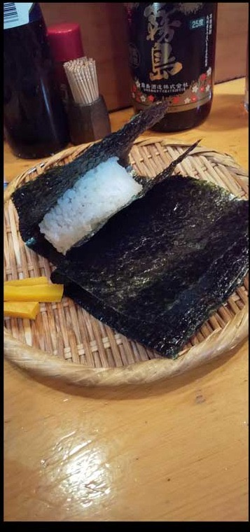
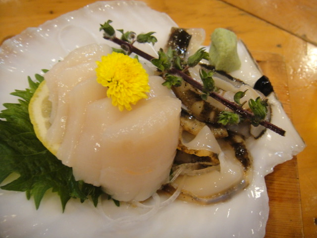
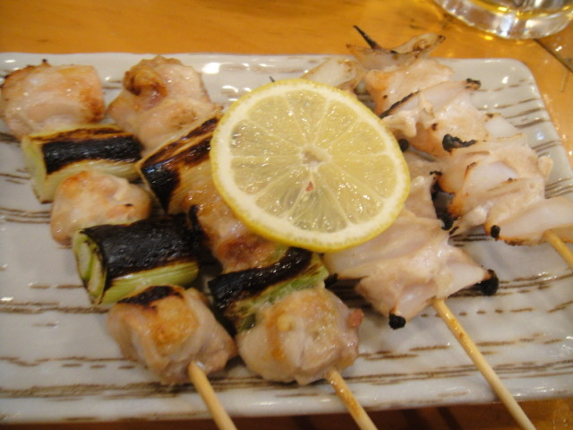

その日の、魚
SEAFOOD刺身、焼きもの、揚げもの、煮つけ。仕入れによって並ぶ魚は変わります。 「今日は何がいい？」と、カウンター越しに聞いてみてください。 貝の刺身やあん肝、カワハギの肝醤油など、季節のものが出ることもあります。
目印は、えんじの看板と、おにぎりの顔が並ぶ暖簾。
その日の魚を丁寧に。そして最後は、具のたっぷり入ったおにぎりで。






派手なものは何もありません。あるのは「その日の魚」と「〆のおにぎり」。 この二つを目当てに、地元の方が長く通ってくださっているお店です。
刺身、焼きもの、揚げもの、煮つけ。仕入れによって並ぶ魚は変わります。 「今日は何がいい？」と、カウンター越しに聞いてみてください。 貝の刺身やあん肝、カワハギの肝醤油など、季節のものが出ることもあります。
暖簾に描かれているのも、軒先で灯っているのも、おにぎりの顔です。 具は十二種。最後の一品として、お茶漬けにしても。 「具の量でわかる心意気」と口コミに書かれるのが、この店のおにぎりです。
お腹の具合と、その日の気分で。軽く一つでも、二つ三つでも。 握りたてをお出ししますので、お帰りの少し前にお声がけください。

鮭・梅干し 各500円。「今日はこれで〆る」という日に。
※ 価格は参考価格です。仕入れや時期により変わることがありますので、最新の価格はお店にご確認ください。
刺身は、その日入ったものから。カウンターの壁に、手書きのお品書きが貼ってあります。
お一人 3,000〜4,000円 ほどでお楽しみいただけます お支払いは現金のみです（カードはご利用いただけません）
※「時価」はその日の仕入れによって内容と価格が変わるもの、「黒板」は店内の手書きのお品書きでご案内するものです。 金額を記した品も、仕入れや時期により変わることがあります。


古河駅の東口を出て、駅前通りをまっすぐ。えんじ色の看板と、 おにぎりの顔が四つ並んだ暖簾が出ていれば、営業中です。
カウンター8席と座敷12席、あわせて20席だけの小さな店を、夫婦で営んでいます。 大きな宴会には向きませんが、そのぶん一人ひとりに目が届きます。 はじめての方も、カウンターの端でどうぞ。
お客様が持ち込んでくださった珍しい魚が、その日の一品になることもあります。 仕入れの都合で並ぶものは変わりますので、まずは「今日は何がありますか」と聞いてみてください。
「気さくな店主が迎えてくれるお店。新鮮な魚と丁寧な料理で毎回感動させてくれる優良店です。」食べログ 口コミより（2023年）
「おにぎりの具の量でわかる、マスターの心意気。」食べログ 口コミより
「刺身は比較的美味しい物ばかりです。品質の良い居酒屋と思います。」食べログ 口コミより
おひとり・お二人は、ご予約なしでどうぞ。 4名様以上や座敷をご希望の場合は、お電話をいただけると確実です（お電話は18時以降がつながりやすくなります）。
※ 配置は席数をもとにした概略図です。実際の配置とは異なる場合があります。
その日の魚を1〜2品と、〆のおにぎり。仕事帰りの一杯にちょうどいい距離感です。
座敷は12席。4〜6名ほどの集まりに向いています。人数が決まったらお電話ください。
23時まで営業。おにぎり150円〜、お茶漬け500円。軽く〆てから帰る、という使い方も。
| 店名 | りくぜん 古河店 |
|---|---|
| 住所 | 〒306-0011 茨城県古河市東3-1-14 |
| 電話 | 0280-33-0125 |
| アクセス | JR宇都宮線・上野東京ライン 古河駅 東口より徒歩5分東口を出て駅前通りをまっすぐ。えんじ色の看板と、おにぎりの絵が入った暖簾が目印です。 |
| 営業時間 | 18:00〜23:00ご来店が遅くなる場合は、お電話でご相談ください。 |
| 定休日 | 日曜日祝日は営業しています。 |
| 席数 | 全20席（カウンター8席・座敷12席）個室はございません／全席禁煙 |
| 駐車場 | 専用駐車場はございません近隣のコインパーキングをご利用ください。 |
| ご予算 | お一人 3,000〜4,000円ほど |
| お支払い | 現金クレジットカードはご利用いただけません。 |